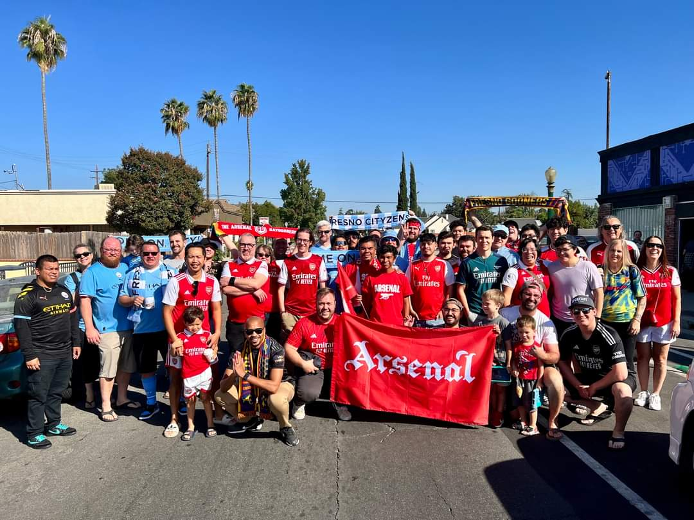

195 Countries, 1 Club
Arsenal is loved by milions of people around the world. In fact, it is one of the most popular soccer teams in the world. In my travels, since I always wear an Arsenal jersey, I have met fans everywhere I've been. I've also encountered some friendly banter from fans of opposing teams all in good fun.
The club officially recognizes various international groups which are part of the Arsenal Supporters Club. There are official Arsenal Supporters Club groups in 6 continents, though I'm sure you could find at least one Arsenal fan in Antarctica.
Here in the U.S., we have the official Arsenal America group, of which there are 72 local branches. Here in the central valley, our closest Arsenal America group is the Fresno Gooners. I was part of the Beach City Gooners in Long Beach, as well as the LA Gooners in Los Angeles.

One of the parts of being an Arsenal fan that never fails to give me goosebumps is hearing fans singing the song "North London Forever" which was written and performed by longtime Arsenal fan Louis Dunford. Fans sing this song in unison before every home game and I have no doubt that it gets the team ready to play for the fans.